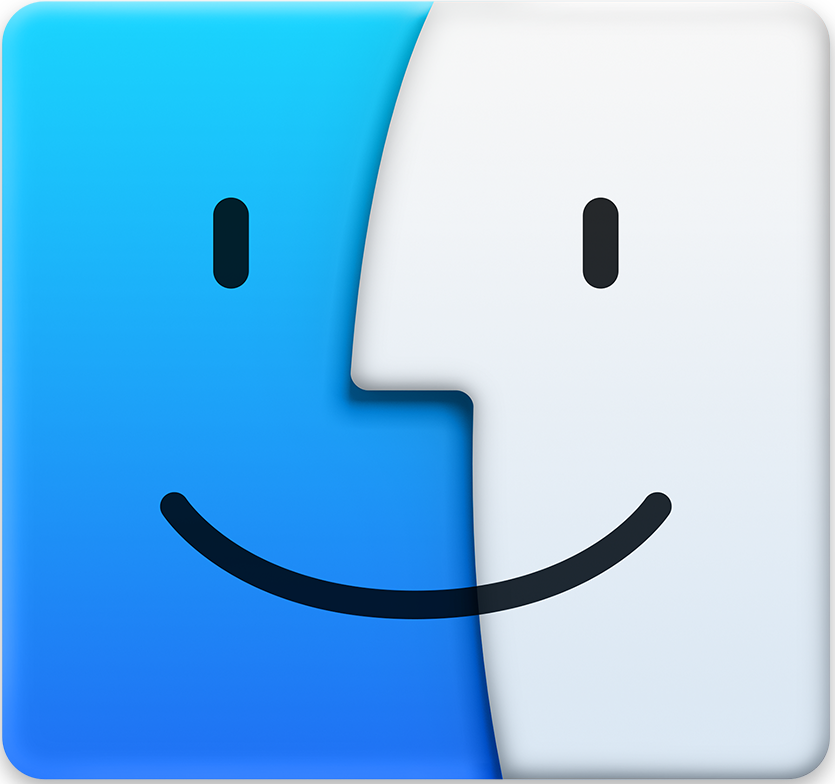

Welcome to my portfolio ! Do not hesitate to head to the finder icon in order to view my projects. You can also click on the messages icon to contact me, or explore the interface as you wish ! Have a nice browsing !
You can use the status bar in order to get more information about me and contact me! Simply click on the items. Here is a non-exhaustive list of what you can do with it!
The dock is composed of five icons that have the following purposes (the trashbin does nothing) :
 The finder opens a window that reveals my projets. With multiple icons that you can click on. Each of those will open a safari window with a webpage describing the relevant project you clicked onto.
 The safari is a web browser that, sadly, won't be able to open external websites (such as Google), because of their CORS policy. It is here to help you view local websites such as the page that you are currently reading. Clicking on the icon will lead you to this page. However, you can change the value of the field above to the following :
The safari is a web browser that, sadly, won't be able to open external websites (such as Google), because of their CORS policy. It is here to help you view local websites such as the page that you are currently reading. Clicking on the icon will lead you to this page. However, you can change the value of the field above to the following :
The messages app opens a chat app that is actually a form. In an interactive way, you can fill the field below, answer the queries and send me a message this way.

 Those icons, once clicked, redirects respectively to my GitHub profile & my LinkedIn profile.
Those icons, once clicked, redirects respectively to my GitHub profile & my LinkedIn profile.